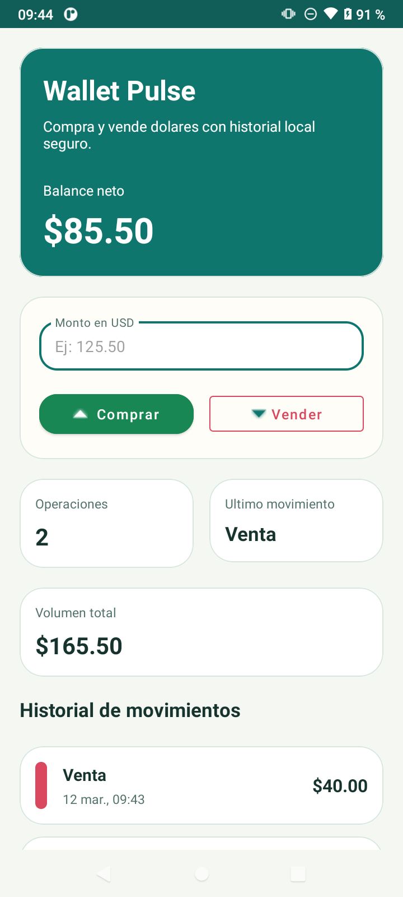
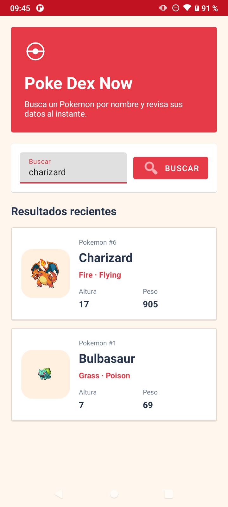
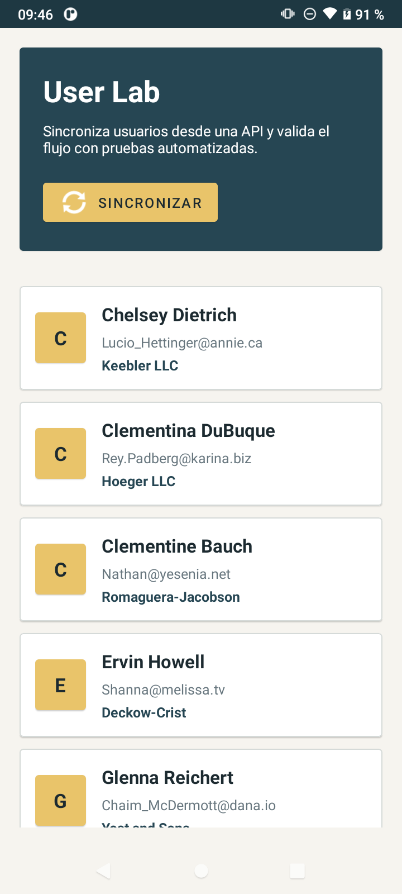
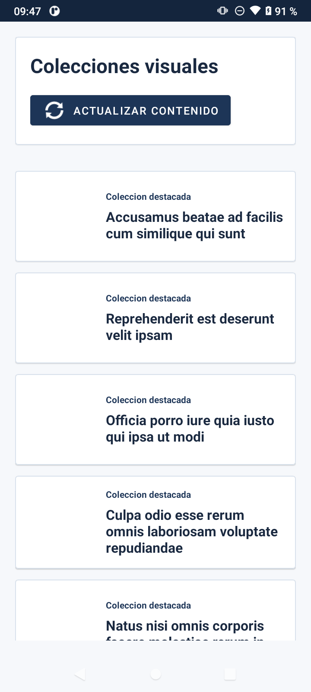
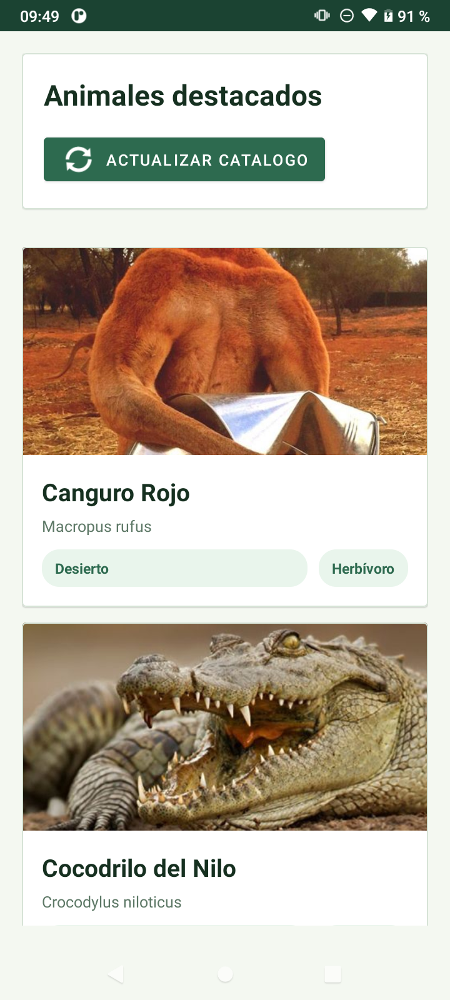

Portafolio profesional
Desarrollo productos utiles, apps Android y automatizaciones pensadas para resolver problemas reales.
Soy Edinson Ahumada, desarrollador full stack en Chile. Combino Kotlin, Java, Python, PHP y bases de datos para construir soluciones tecnicas claras, mantenibles y listas para evolucionar.
Sobre mi
Perfil tecnico con foco en entrega, claridad y resultados.
Trabajo en productos donde el codigo no solo tiene que funcionar: tambien debe ser entendible, facil de mantener y util para quien lo usa. Me muevo con soltura entre interfaces Android, servicios backend, automatizaciones y manejo de datos.
En mis proyectos conviven integraciones REST, persistencia local, pruebas, despliegue y preocupacion real por la experiencia final. Me interesa construir herramientas que ahorren tiempo, reduzcan friccion y se puedan operar con confianza.
Lo que mas desarrollo hoy
Kotlin
Java
Android Studio
Python
PHP
SQLite
MySQL
MongoDB
REST APIs
Automatizacion
Stack
Herramientas con las que convierto ideas en productos funcionales.
Frontend y apps
Android nativo con Kotlin y Java, interfaces responsivas y flujo de usuario cuidado.
Backend e integraciones
APIs REST, procesamiento de datos, automatizaciones y servicios conectados a fuentes externas.
Persistencia
SQLite, Room, MySQL, MariaDB y MongoDB para cache, historial, reportes y modelos de negocio.
Calidad y entrega
Pruebas, estructura mantenible, despliegue en GitHub y proyectos preparados para evolucionar.
Proyectos destacados
Una muestra de repos publicos con imagenes reales tomadas desde mis desarrollos.

Wallet Pulse
Registro de compra y venta de dolares con historial persistente, resumen financiero y UI operativa.

Poke Dex Now
Consumo de API REST para buscar Pokemon, mostrar su imagen y mantener resultados recientes en una sola vista.

User Lab
Sincronizacion de usuarios con cache local y pruebas unitarias sobre la capa de repositorio.

Gallery Atlas
Proyecto Android final con flujo de bienvenida, listado, detalle y formulario de contacto conectado a servicios remotos.

Zoologico App
Catalogo de animales con cache local, detalle enriquecido y accion directa para contacto por correo.
Mas trabajo publico en GitHub
Ademas de Android, mantengo repos sobre automatizacion, herramientas y servicios como Accessibility Inspector Service, ScreenshotTile, APIs, Flask y otras soluciones productivas.
Forma de trabajo
De la idea al despliegue, con foco tecnico y mirada de producto.
Entender el problema
Traduzco necesidades reales en flujos, modulos y decisiones de implementacion concretas.
Construir con criterio
Prioridad en arquitectura simple, integraciones correctas, persistencia y experiencia usable.
Validar y publicar
Pruebas, ajustes, evidencia visual y despliegue para que el proyecto quede realmente presentable.
Contacto
Si quieres revisar mas trabajo o conversar sobre un proyecto, aqui estoy.
Mi perfil publico concentra repos, experimentos y desarrollos listos para revisar. Tambien puedes visitar mi sitio y conocer mas de mi trabajo actual.